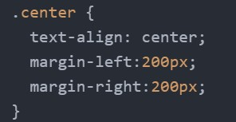
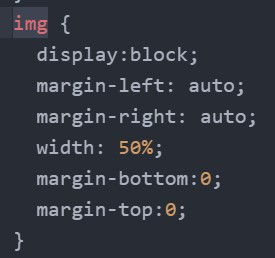
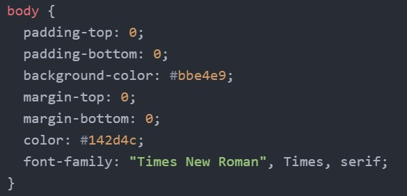
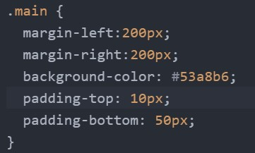
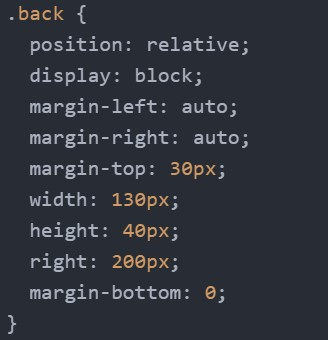
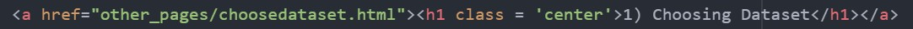
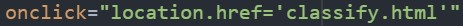

CS1102 Project (2022-2023 Semester A)
Project Group for Lab1_Tue_1600 1
Used Techniques
Center the text and image


Use div to make a colored banner and, center it, change the background color.


Change padding and margin to regulate the position of objects. Use relative position and pushing to put buttons in one line.

Use "location.href=path" from JavaScript in buttons and anchor tags for loading other pages.

